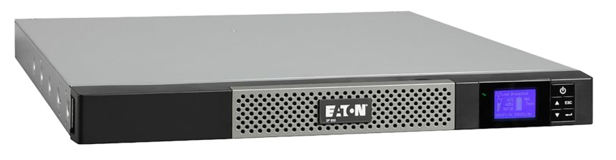

Hardware infrastructure#
The server is self-hosted in France in Pantin.
See also
Tickets about the hardware infrastructure are grouped on the forum under the hardware tag.
Internet connection#
It is connected to internet by optical fiber with average rates of 200Mb/s in upload and 500Mb/s in download. The internet connection is provided by Bouygues Telecom.
Uninterruptible power supply#
An uninterruptible power supply (UPS) is above all a power strip, but with some additional functions, including:
protection against over-voltage or sub-tensions, for example in the event of storms.
maintaining electrical power in the event of a power outage (thanks to its internal battery).
communication with the server to tell it to shut down “properly” when the power does not return and it soon runs out of battery.
It is connected upstream of all computer equipment and its role is therefore to provide them with a quality power supply.
Our model: 5P650IR from the EATON brand Specifications on the manufacturer’s website
We selected it, among other things, because it has the lowest power (420W) among the EATON pro range. The price of this equipment is quite high (a little over €300). Previously, we had bought a lower-end model second-hand for €40. It broke down after a year of use.

This is a rack model with a height of 1U. A small screen provides access to some statistics and settings. For example, it indicates the electricity consumption of the entire infrastructure in Watts.

From left to right: the arrival of the electrical current, the communication ports with the server, then the four electrical outputs benefiting from the advantages of the UPS.
Maintenance#
Internal batteries are guaranteed for 3 to 5 years. They are changed via the front of the device. It is therefore not necessary to unscrew it or unplug it during this operation.
Server#
Case#
Model: SilverStone RM21-304 Manufacturer’s Site

Rackmount case with a height of 2U.
Cooling#
One of our interests in this case was the quality of its cooling. It has three slots for 80mm fans. The default fans have been replaced by quieter models from the Noctua brand.
Old case#
Previously, we used a Chenbro ES34169 case, which was more compact, but was not rack-mountable and not as well cooled. An article from the journal retraces this evolution.
Motherboard#
Model: Supermicro A2SDi-4C-HLN4F Manufacturer’s Site
It is a standard Mini-ITX format board, so it has a 17cm square format.

Main connections:
storage
1 M.2 port
1 mini-SAS HD port
4 SATA ports
network
4 1Gb/s Ethernet RJ45 ports
Processor#
Model: Intel Atom C3000
Low consumption quad-core processor. It is directly soldered on the motherboard.
Memory#
Model : RAM Samsung ECC Registered 16Go M393A2G40DB0-CPB
The server has a single 16 GB DDR4 ECC module, among the four slots provided by the motherboard. This leaves room to increase this capacity if necessary.
Storage#
It consists of three separate storage media:
system#
The operating system, as well as MariaDB and PostgreSQL databases are on a NVMe SSD with a capacity of 1To connected to the M.2 port of the motherboard. This configuration provides the fastest bitrates allowed by this motherboard.
Model: Samsung 980 SSD 1To
Users#
L’espace personnel des membres est stocké dans un second support : Un autre SSD de 1To, mais cette fois ci, connecté sur un port SATA. Les débit sont donc un peu plus faibles (500Mb/s), par rapport au SSD système.
Modèle : Samsung EVO 860 1To.
An article in the journal tells the story of his arrival in the server.
Secondary storage#
2TB 5600rpm hard drive. Not supported by the backups.
Power supply#
FSP250-60EGA 90+